Lecture4.pdf · 2603520 Deep Learning
บทนี้ทำ 2 อย่าง: (1) ยืนยันว่าสูตร backprop จาก Lesson 3 ใช้ได้กับเครือข่ายกี่ layer ก็ได้ แค่โซ่ chain rule ยาวขึ้น (2) แนะนำ optimizer ที่เร็วกว่า plain gradient descent — Momentum, RMSProp, Adam — ทุกตัวมีสูตรที่ต้องคำนวณตามได้.
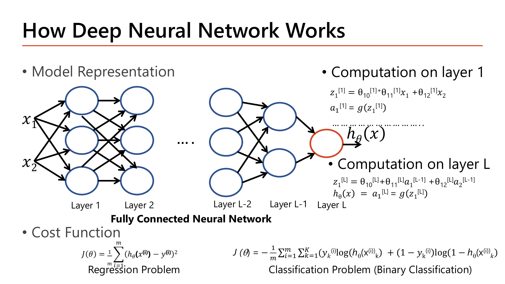
สูตรเดียวกับ Lesson 2-3 เป๊ะ แค่เปลี่ยนจาก "layer 1, layer 2" เป็น "layer l ใดๆ": zⱼ⁽ˡ⁾ = θⱼ₀⁽ˡ⁾ + Σᵢθⱼᵢ⁽ˡ⁾aᵢ⁽ˡ⁻¹⁾ แล้ว aⱼ⁽ˡ⁾=g(zⱼ⁽ˡ⁾).
layer แรกใช้ x ดิบๆแทน a⁽⁰⁾ (นิยาม a⁽⁰⁾:=x) ส่วน layer สุดท้าย L คือ h(x)=a⁽ᴸ⁾.
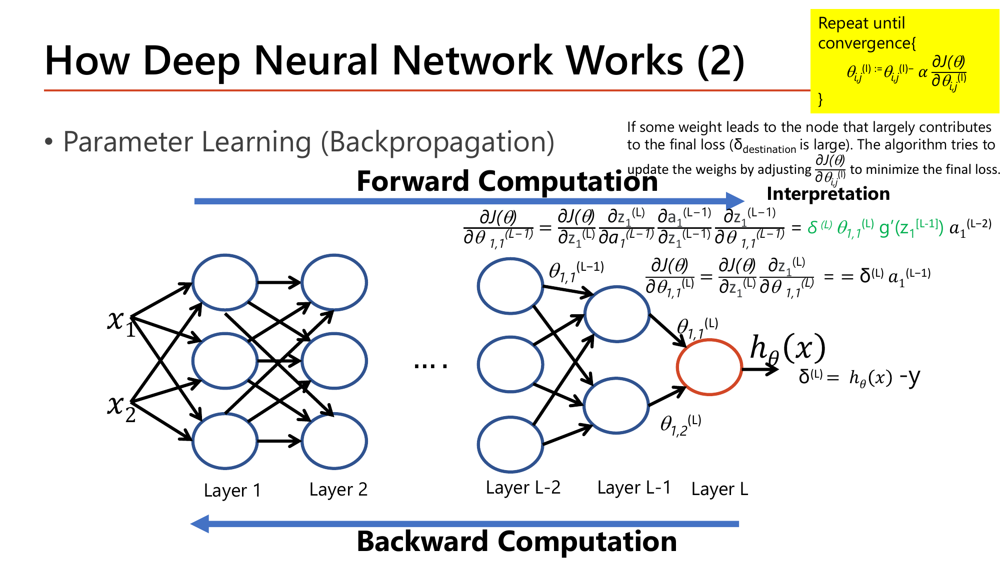
นี่คือการขยายสูตร Lesson 3 หัวข้อ 2 ตรงๆ: ∂J/∂θ₁,₁⁽ᴸ⁻¹⁾ = δ⁽ᴸ⁾ · θ₁,₁⁽ᴸ⁾ · g'(z₁⁽ᴸ⁻¹⁾) · a₁⁽ᴸ⁻²⁾.
เทียบกับสูตร 2 layer เดิม (4 เทอมคูณกัน) สูตรนี้ก็ยังมี 4 เทอมเท่ากัน (δ, θ, g', a) เพียงแต่ตอนนี้ δ, θ, g', a ทุกตัวมี superscript [L] หรือ [L-1] ไม่ใช่ [1]/[2] ตายตัว.
คำอธิบายที่สไลด์ให้ (Interpretation): ถ้า weight เส้นหนึ่งเชื่อมไปยัง node ที่มี δdestination ใหญ่ (node นั้นมีส่วนทำให้ error สุดท้ายสูง) gradient ของเส้นนั้นก็จะใหญ่ตาม ทำให้ gradient descent ปรับ weight เส้นนั้นแรงกว่าเส้นอื่น — ตรรกะ "ปรับมากตรงที่ผิดมาก" เดียวกับทุก layer ไม่ว่าจะมีกี่ layer.
สไลด์สรุป 4 ปัญหาหลักของการเทรนเครือข่ายลึก:
บทนี้ตอบปัญหาที่ 1 ด้วย optimizer ที่เร็วกว่า และปัญหาที่ 2 ด้วยเทคนิค overfitting handling.
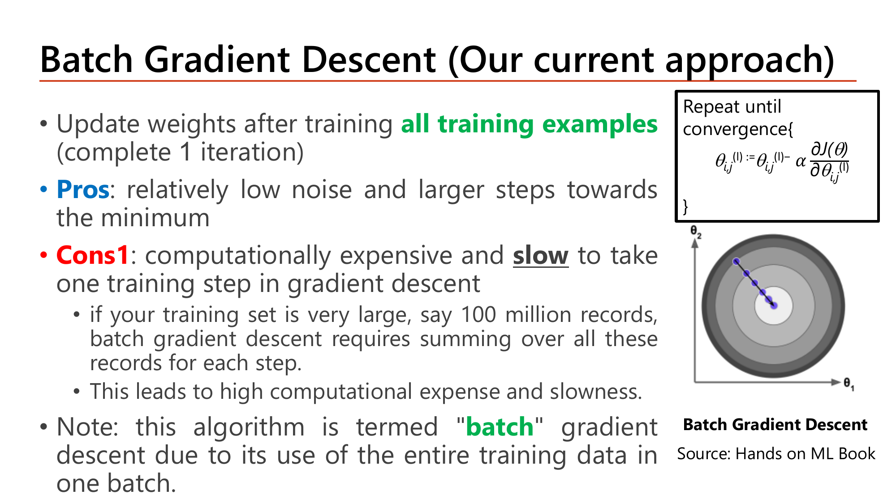
Batch GD (ที่ใช้มาตลอด Lesson 1-3): อัปเดต θ หลังจากคำนวณ gradient จาก training example ทุกตัว ครบ 1 รอบ (1 iteration = 1 epoch).
ข้อดี: ทิศทางแม่นยำ ไม่มี noise ข้อเสีย: ถ้ามี 100 ล้าน records ต้องรวมทั้ง 100 ล้านตัวก่อนอัปเดตได้แค่ 1 ครั้ง ช้ามาก.
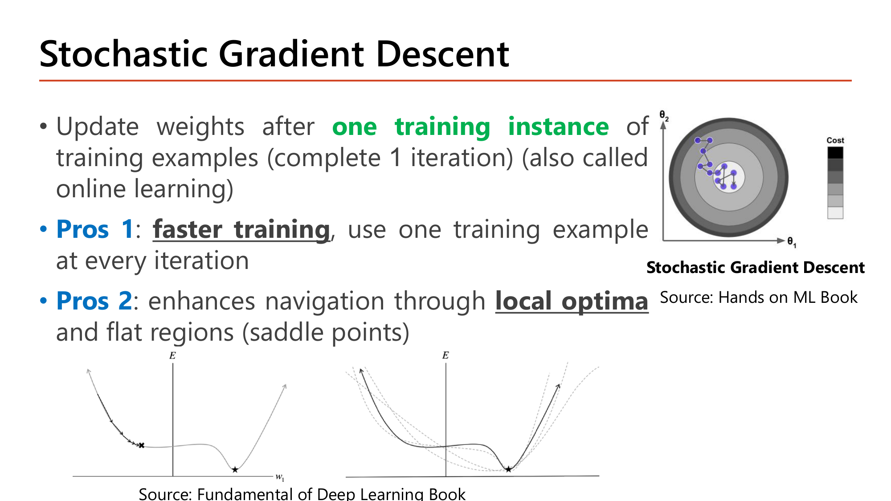
SGD: อัปเดต θ หลังจากดูตัวอย่างเดียวแค่ตัวเดียว — เร็วกว่ามาก และ noise ที่เกิดขึ้นช่วยให้ "กระโดด" ออกจาก local minima/saddle point ได้ดีกว่า Batch GD.
แต่ก็มี noise มากจนบางครั้งเดินสวนทาง ไม่ลู่เข้าเสถียร และเสียความเร็วจากการไม่ได้ใช้ matrix multiplication เต็มรูปแบบ.
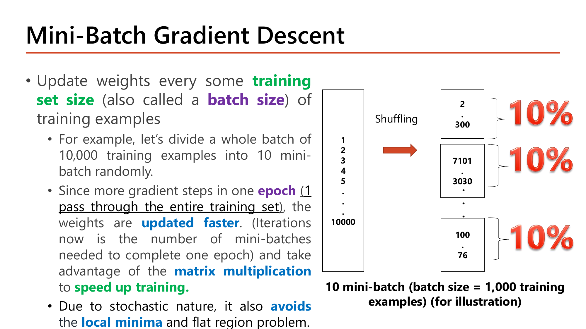
Mini-Batch GD: จุดกึ่งกลาง — สไลด์ยกตัวอย่าง: มี 10,000 training examples แบ่งเป็น 10 mini-batch (batch size = 1,000 ตัวอย่างต่อ batch) อัปเดต θ ทุกครั้งที่ผ่าน 1 mini-batch (คำนวณ: 10,000 ÷ 1,000 = 10 mini-batches ต่อ 1 epoch).
ได้ทั้งความเร็วจาก matrix multiplication (คำนวณทีละ 1,000 ตัวอย่างพร้อมกัน) และความเสถียรที่ดีกว่า SGD ตัวเดียว — batch size ที่นิยม (32-256, เป็นเลขยกกำลัง 2) เพราะ GPU ทำงานได้มีประสิทธิภาพกับขนาดเหล่านี้.
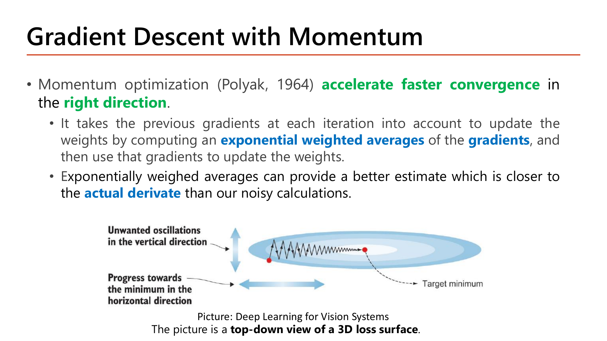
แทนที่จะใช้ gradient ณ จุดปัจจุบันตรงๆ (ซึ่งอาจ noisy และ zigzag) Momentum สร้าง "ค่าเฉลี่ยถ่วงน้ำหนักแบบเอ็กซ์โพเนนเชียล" (Exponential Weighted Moving Average) ของ gradient ที่ผ่านมาทั้งหมด แล้วใช้ค่าเฉลี่ยนี้อัปเดต θ แทน.
ทำให้ทิศทางที่ "ผ่านมาต่อเนื่องกัน" ถูกขยายแรงขึ้นเรื่อยๆ (เหมือนลูกบอลที่กลิ้งไปทางเดิมนานๆจะเร่งความเร็ว) ในขณะที่ทิศทางที่ "แฉลบไปมา" จะถูกหักลบกันเองจนอ่อนแรงลง.
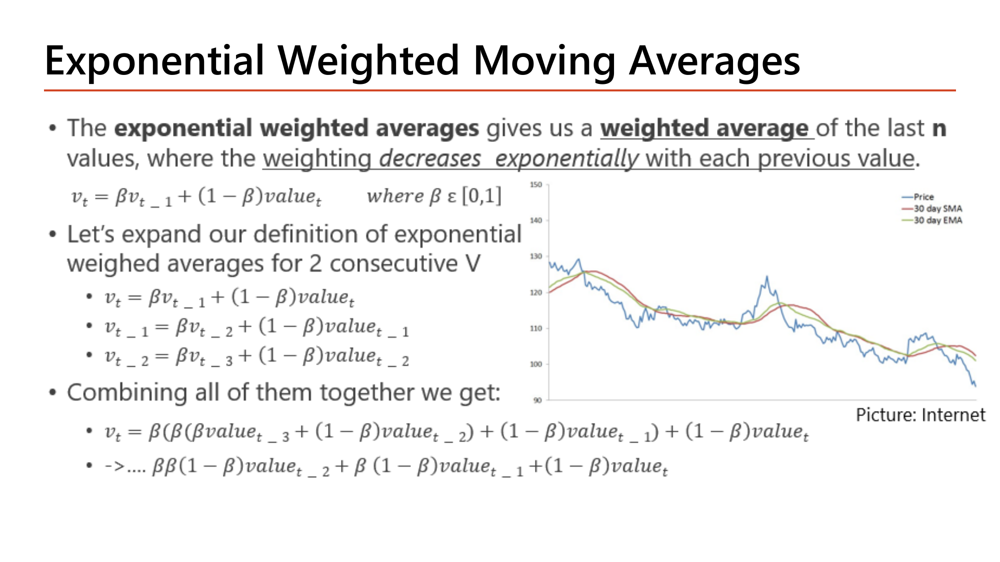
สูตรตั้งต้น: vₜ = β·vₜ₋₁ + (1−β)·valueₜ — สไลด์ให้ขยายสูตรนี้ย้อนไป 3 ขั้นเพื่อดูว่า v ณ ปัจจุบันจริงๆแล้วประกอบด้วยอะไร: แทน vₜ₋₁ = β·vₜ₋₂+(1−β)·valueₜ₋₁ เข้าไปใน vₜ แล้วแทนต่อไปอีกชั้น vₜ₋₂ = β·vₜ₋₃+(1−β)·valueₜ₋₂ ไล่แทนจนหมด ได้:
vₜ = β²(1−β)valueₜ₋₂ + β(1−β)valueₜ₋₁ + (1−β)valueₜ + …
สังเกตแพทเทิร์นของสัมประสิทธิ์:
valueₜ (ล่าสุด) มีน้ำหนัก (1−β)valueₜ₋₁ มีน้ำหนัก β(1−β) (เล็กกว่า เพราะคูณด้วย β<1 เพิ่มอีกชั้น)valueₜ₋₂ มีน้ำหนัก β²(1−β) (เล็กกว่าอีก)ยิ่ง value เก่าเท่าไหร่ ยิ่งถูกคูณด้วย β ซ้ำหลายรอบ น้ำหนักจึงเล็กลงแบบเอ็กซ์โพเนนเชียล ตามชื่อของมัน — ถ้า β=0.9 ตัวอย่างเช่น value ปัจจุบันมีน้ำหนัก 0.1 ค่าก่อนหน้ามีน้ำหนัก 0.09 ก่อนนั้นอีก 0.081 ไล่ลดลงเรื่อยๆ.
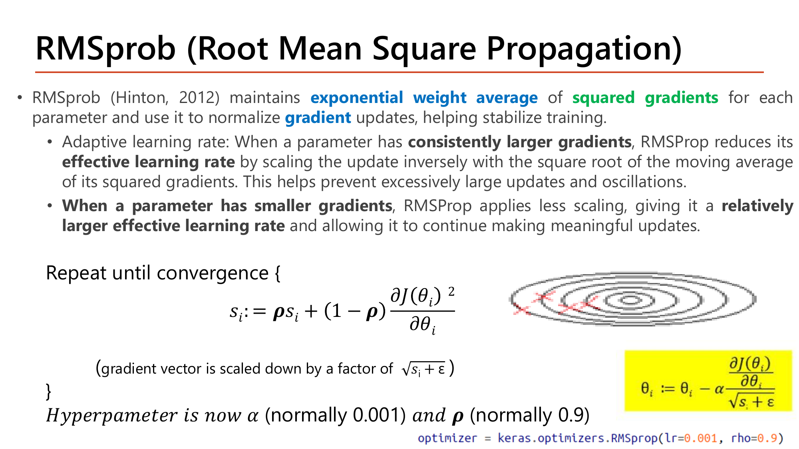
RMSProp เก็บค่าเฉลี่ยถ่วงน้ำหนักของ กำลังสอง ของ gradient: sᵢ := ρ·sᵢ + (1−ρ)·(∂J/∂θᵢ)² แล้วหาร gradient ด้วย √(sᵢ+ε) ก่อนอัปเดต θ.
นี่คือความหมายของ "adaptive learning rate ต่อพารามิเตอร์": แต่ละ θᵢ มี effective learning rate ของตัวเอง ไม่ใช้ α ตัวเดียวกันทุกพารามิเตอร์แบบ plain gradient descent.
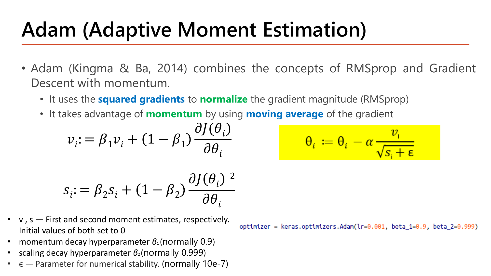
Adam คือ Momentum + RMSProp ในตัวเดียว: เก็บทั้ง vᵢ (ค่าเฉลี่ยของ gradient แบบ Momentum, β₁ ปรกติ 0.9) และ sᵢ (ค่าเฉลี่ยของ gradient² แบบ RMSProp, β₂ ปรกติ 0.999) แล้วอัปเดตด้วยทั้งสองค่าร่วมกัน.
ได้ทั้งความเร็วจาก momentum และการปรับ scale อัตโนมัติจาก RMSProp พร้อมกัน จึงเป็น optimizer เริ่มต้นที่นิยมที่สุดในปัจจุบัน.
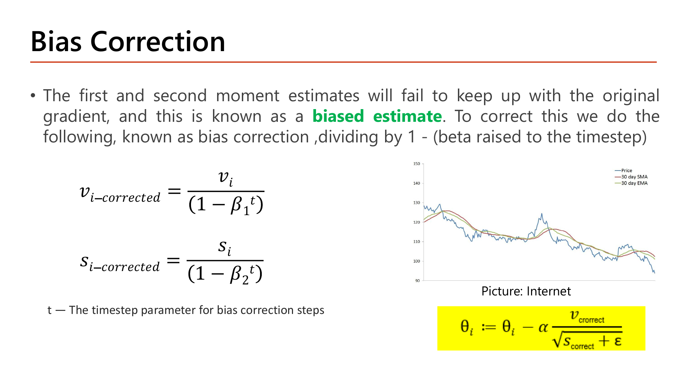
เพราะ v₀=0, s₀=0 ตอนเริ่มต้น ในไม่กี่ iteration แรก vᵢ,sᵢ จะยัง "เอียงเข้าใกล้ 0" มากเกินจริง (biased) สไลด์แก้ด้วยการหารด้วย (1−β^t): vᵢ_corrected = vᵢ/(1−β₁ᵗ).
ที่ t เล็ก (t=1,2,..) ตัวหาร (1−β₁ᵗ) จะเล็กมาก (เพราะ β₁ᵗ ยังใกล้ 1 อยู่) ทำให้ค่าที่แก้แล้วถูก "ขยาย" ขึ้นมาชดเชยพอดี.
พอ t มากขึ้น β₁ᵗ→0 ตัวหารเข้าใกล้ 1 การแก้ไขจึงแทบไม่มีผลอีกต่อไป (ค่า v ที่สะสมมามากพอแล้วไม่ bias เข้า 0 อีก).
L1/L2 regularization ใช้สูตรเดียวกับ Lesson 1 หัวข้อ 11 และ Lesson 3 หัวข้อ 7 ทุกตัวอักษร เพิ่มเติมคือ Max-Norm Regularization: บีบขนาดของ weight vector แต่ละ node ให้ ‖w‖₂ ≤ r — ถ้า norm เกิน r ให้ rescale ทันที w := w·(r/‖w‖₂) (สัดส่วน r/‖w‖₂ จะ ≤1 เสมอเมื่อ norm เกิน จึงบีบให้เล็กลงพอดี).
ต่างจาก L1/L2 ที่เพิ่ม penalty term ในcost function, max-norm ปรับ w ตรงๆหลังทุก training step โดยไม่ต้องแก้ cost function เลย.
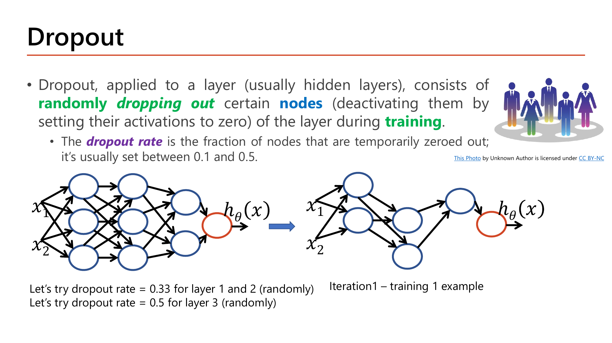
Dropout สุ่มปิด node บางส่วนในแต่ละ layer ระหว่างเทรน (ตั้งค่า activation เป็น 0 ชั่วคราว) ตัวอย่างสไลด์: dropout rate = 0.33 สำหรับ layer 1,2 และ 0.5 สำหรับ layer 3 (สุ่มใหม่ทุก iteration).
เป้าหมายคือบีบไม่ให้เครือข่าย "พึ่งพา" node กลุ่มเดิมซ้ำๆจนจำ training data ได้แบบตายตัว (แต่ละรอบเครือข่ายต้องเรียนรู้จาก node สุ่มที่เหลืออยู่ ทำให้แต่ละ node ต้องเป็นประโยชน์ได้ด้วยตัวเองมากขึ้น ไม่ต้องพึ่ง node ข้างเคียงตลอดเวลา).
ทำไมต้อง scale activation ตอน training (Inverted Dropout)? สมมติ dropout rate=0.1 (10% ของ node ถูกปิด) นั่นคือ keep_prob=1−0.1=0.9 — สไลด์บอกให้หารค่า activation ที่เหลือด้วย keep_prob คือหารด้วย 0.9 (เท่ากับเพิ่มค่าที่เหลือขึ้น ~11%).
เหตุผล: ถ้าไม่ scale ผลรวม input ที่ node ถัดไปได้รับจะ "น้อยกว่าปรกติ" เพราะมี node หายไป 10% พอถึงเวลา test (ไม่ dropout แล้ว ทุก node กลับมาทำงานครบ) ผลรวมจะกลายเป็น "มากกว่า" ที่โมเดลเคยเห็นตอนเทรน ถ้าไม่ชดเชยไว้ตั้งแต่ตอนเทรน การกระจายของค่า activation ตอน train กับ test จะไม่ตรงกัน.
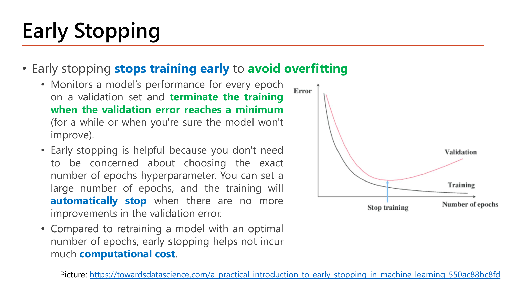
Early Stopping ติดตาม validation error ทุก epoch แล้วหยุดเทรนตรงจุดที่ validation error เริ่มเพิ่มขึ้น (แม้ training error จะยังลดลงต่อเนื่องก็ตาม) — จุดตัดระหว่างสองเส้นในกราฟคือสัญญาณว่าโมเดลเริ่ม overfit (จำ training data มากเกินไปจนเสีย generalization).
ข้อดีคือไม่ต้องเดา hyperparameter "จำนวน epoch ที่เหมาะสม" ล่วงหน้าเลย ตั้งจำนวน epoch ไว้สูงๆแล้วให้ early stopping หยุดเองตรงจุดที่ดีที่สุด.
ถ้ามี training example น้อยเกินไป (สาเหตุของ overfitting โดยตรง) แต่เก็บข้อมูลใหม่ไม่ได้ ให้สร้างข้อมูลใหม่จากข้อมูลเดิมด้วยการแปลงแบบสุ่ม (เช่น หมุนภาพ, พลิกภาพ, ครอปภาพ).
โมเดลจะเห็นความหลากหลายมากขึ้นในแต่ละ epoch ทำให้ทนทานต่อการเปลี่ยนตำแหน่ง/ทิศทาง/ขนาดของวัตถุในภาพมากขึ้น โดยไม่ต้องเก็บข้อมูลจริงเพิ่มเลย.
| หน้า | เนื้อหา | สถานะ |
|---|---|---|
| 1 | ปก Part 2-Deep Neural Network | etc — บริบทวิชา |
| 2 | Deep Neural Network — นิยาม | etc — เกริ่นก่อนหัวข้อ 1 |
| 3 | How Deep Neural Network Works — สูตร forward ทั่วไป | ✓ หัวข้อ 1 (มีรูป) |
| 4 | How Deep Neural Network Works (2) — สูตร backward ทั่วไป | ✓ หัวข้อ 1 (มีรูป) |
| 5 | Challenging in Training Deep Neural Networks — 4 ปัญหาหลัก | ✓ หัวข้อ 2 |
| 6 | Faster Optimizers — เกริ่นภาพรวม | etc — เกริ่นก่อนหัวข้อ 3 |
| 7 | Batch Gradient Descent | ✓ หัวข้อ 3 (มีรูป) |
| 8 | Batch Gradient Descent (2) — Local Minima Problem | etc — ข้อจำกัดเสริมของ Batch GD |
| 9 | Stochastic Gradient Descent | ✓ หัวข้อ 3 (มีรูป) |
| 10 | Stochastic Gradient Descent (2) — ข้อเสีย | ✓ หัวข้อ 3 (อธิบายในเนื้อหา) |
| 11 | Mini-Batch Gradient Descent | ✓ หัวข้อ 3 (มีรูป, คำนวณ 10,000÷1,000) |
| 12 | Choosing an Appropriate Batch Size | ✓ หัวข้อ 3 (อธิบายในเนื้อหา) |
| 13 | Cost in Training Mini-Batch Gradient Descent — กราฟเปรียบเทียบ | etc — ภาพเสริมเปรียบเทียบความนิ่งของ cost |
| 14 | Gradient Descent with Momentum | ✓ หัวข้อ 4 (มีรูป) |
| 15 | Exponential Weighted Moving Averages — ขยายสูตร recursive | ✓ หัวข้อ 4 (มีรูป, คำนวณเต็ม) |
| 16 | Implementation — pseudocode ของ Momentum | etc — โค้ด/สูตร implementation (ตรงกับหัวข้อ 4) |
| 17–19 | More on Momentum (1)-(3) — แก้ local minima, learning rate decay | etc — รายละเอียดเสริมของ Momentum |
| 20 | Adaptive Learning Rate — เกริ่นก่อน RMSProp/Adam | etc — เกริ่นก่อนหัวข้อ 5 |
| 21 | RMSprop | ✓ หัวข้อ 5 (มีรูป) |
| 22 | Adam | ✓ หัวข้อ 5 (มีรูป) |
| 23 | Bias Correction | ✓ หัวข้อ 5 (มีรูป) |
| 24 | Experiments — เปรียบเทียบ Mini-Batch/Momentum/Adam | etc — ผลการทดลองเปรียบเทียบ (เชิงคุณภาพ) |
| 25 | AdamW — decoupled weight decay | etc — ส่วนขยายของ Adam นอกขอบเขต quiz หลัก |
| 26 | Overfitting Handling Strategies — เกริ่นภาพรวม | etc — เกริ่นก่อนหัวข้อ 6 |
| 27 | Regularization — L1/L2/Max-Norm | ✓ หัวข้อ 6 (อธิบายในเนื้อหา) |
| 28 | Dropout | ✓ หัวข้อ 6 (มีรูป) |
| 29 | Dropout (2) — Inverted Dropout scaling | ✓ หัวข้อ 6 (คำนวณในเนื้อหา) |
| 30 | Dropout (3) — debugging ด้วยการปิด dropout ชั่วคราว | etc — เทคนิค debugging เสริม |
| 31 | Dropout Implementation — forward/backward pseudocode | etc — รายละเอียด implementation |
| 32 | Early Stopping | ✓ หัวข้อ 6 (มีรูป) |
| 33 | Early Stopping (2) — ข้อจำกัด | etc — ข้อจำกัดเสริมของ Early Stopping |
| 34 | Data Augmentation | ✓ หัวข้อ 7 |
| 35 | Homework 2 | etc — การบ้าน ไม่ใช่เนื้อหาสอบ |
สงสัยตรงไหน ถามได้เลยในแชท — ผมเป็นผู้สอนของคุณ ถามซ้ำได้ ถามลึกได้ ไม่ต้องเกรงใจ.